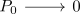

cellular approximation of a chain complex with projectives
Proposition
Let $\mathcal{A}$ be an abelian category admitting enough projectives,d $C_* \in \mathrm{Ch_{\geq}(\mathcal{A})$ be a chain complex with bounded below homology Then there exists a degreewise chain complex of free modules $P_*$ and a quasi-isomorphism
Proof
We construct inductively a chain complex such that $H_n(P_*) \cong H_n(C_*)$ and $H_{n+1}(P_*) \twoheadrightarrow H_{n+1}(C_*)$
induction start
w.l.o.g. we may assume $H_{-1}(C_*)$. Then choose an epimorphism $P_0 \rightarrow H_0(C_*)$ out of a projective object $P_0$ We define

induction step
Choose epis $P^1_{n+1} \twoheadrightarrow H_{n+1}(C_*), P^2_{n+1} \twoheadrightarrow \mathrm{ker}(P_{n} \rightarrow H_n(C_*))$ ? Then define
TODO